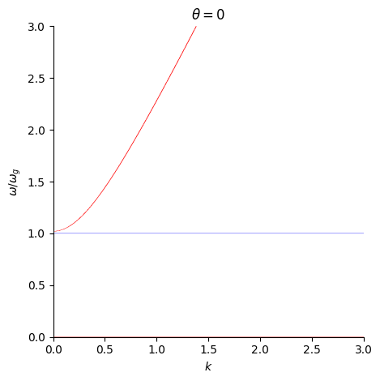
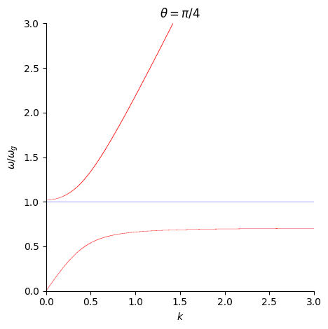
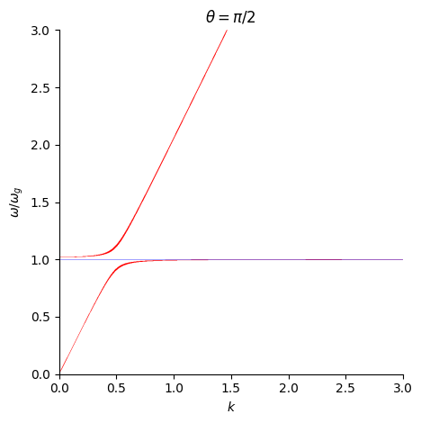

from sympy import *This post is based on content from the “Topics in Magnetohydrodynamics” lecture in 2023 by Professor Tetsuya Magara at Kyung Hee University.
Obtaining the dispersion relation
First, import SymPy and define the necessary symbols.
rho, p, vx, vz = symbols(r'\rho_1^{**} p_1^{**} v_{1x}^{**} v_{1z}^{**}')
w, H, gamma = symbols(r'\omega H \gamma')
rho0, p0, g0, cs0 = symbols(r'\rho_0 p_0, g_0, c_{s0}')
kx, kz = symbols(r'k_x k_z')To obtain the dispersion relation for acoustic-gravity waves, we need to compute the determinant of the following matrix:
A = Matrix([[-I*w, I*kx*rho0, (I*kz-1/(2*H))*rho0, 0],
[0, -I*w*rho0, 0, I*kx],
[g0, 0, -I*w*rho0, I*kz-1/(2*H)],
[I*w*(cs0**2), 0, ((gamma-1)/H)*p0, -I*w]])A\displaystyle \left[\begin{matrix}- i \omega & i \rho_{0} k_{x} & \rho_{0} \left(i k_{z} - \frac{1}{2 H}\right) & 0\\0 & - i \omega \rho_{0} & 0 & i k_{x}\\g_{0} & 0 & - i \omega \rho_{0} & i k_{z} - \frac{1}{2 H}\\i \omega c_{s0}^{2} & 0 & \frac{p_{0} \left(\gamma - 1\right)}{H} & - i \omega\end{matrix}\right]
We can easily calculate the determinant using SymPy. However, the resulting expression is too complex, so we need to simplify it.
detA = A.det()
detA\displaystyle \frac{4 H^{2} \omega^{4} \rho_{0}^{2} - 4 H^{2} \omega^{2} \rho_{0}^{2} c_{s0}^{2} k_{x}^{2} - 4 H^{2} \omega^{2} \rho_{0}^{2} c_{s0}^{2} k_{z}^{2} + 4 i H^{2} \omega^{2} \rho_{0}^{2} g_{0} k_{z} + 4 i H \gamma \omega^{2} \rho_{0} k_{z} p_{0} + 4 H \gamma \rho_{0} g_{0} k_{x}^{2} p_{0} - 4 i H \omega^{2} \rho_{0}^{2} c_{s0}^{2} k_{z} - 2 H \omega^{2} \rho_{0}^{2} g_{0} - 4 i H \omega^{2} \rho_{0} k_{z} p_{0} - 4 H \rho_{0} g_{0} k_{x}^{2} p_{0} - 2 \gamma \omega^{2} \rho_{0} p_{0} + \omega^{2} \rho_{0}^{2} c_{s0}^{2} + 2 \omega^{2} \rho_{0} p_{0}}{4 H^{2}}
As a first step, we substitute the relations for the sound speed c_{s0} and the scale height H:
c_{s0}^2 = \gamma \frac{p_0}{\rho_0} = \gamma g_0 H
H = \frac{p_0}{\rho_0 g_0}
detA_subs = detA.subs(cs0**2, gamma*p0/rho0).subs(H, p0/(rho0*g0))
detA_subs\displaystyle \frac{\rho_{0}^{2} g_{0}^{2} \left(- \gamma \omega^{2} \rho_{0} p_{0} - \frac{4 \gamma \omega^{2} k_{x}^{2} p_{0}^{3}}{\rho_{0} g_{0}^{2}} - \frac{4 \gamma \omega^{2} k_{z}^{2} p_{0}^{3}}{\rho_{0} g_{0}^{2}} + 4 \gamma k_{x}^{2} p_{0}^{2} + \frac{4 \omega^{4} p_{0}^{2}}{g_{0}^{2}} - 4 k_{x}^{2} p_{0}^{2}\right)}{4 p_{0}^{2}}
Next, we factor out \omega from this equation
detA_collect = collect(expand(detA_subs), w, factor)
detA_collect\displaystyle - \frac{\gamma \omega^{2} \rho_{0} \left(\rho_{0}^{2} g_{0}^{2} + 4 k_{x}^{2} p_{0}^{2} + 4 k_{z}^{2} p_{0}^{2}\right)}{4 p_{0}} + \omega^{4} \rho_{0}^{2} + \rho_{0}^{2} g_{0}^{2} k_{x}^{2} \left(\gamma - 1\right)
and divide by \rho_0^2.
rho02 = (rho0**2)
detA_collect_ = collect(expand((detA_collect/rho02).cancel()), w, factor)
detA_collect_\displaystyle - \frac{\gamma \omega^{2} \left(\rho_{0}^{2} g_{0}^{2} + 4 k_{x}^{2} p_{0}^{2} + 4 k_{z}^{2} p_{0}^{2}\right)}{4 \rho_{0} p_{0}} + \omega^{4} + g_{0}^{2} k_{x}^{2} \left(\gamma - 1\right)
Now, we examine the key coefficients:
- Constant term
wc0 = detA_collect_.coeff(w, 0)
wc0\displaystyle g_{0}^{2} k_{x}^{2} \left(\gamma - 1\right)
- Coefficient of \omega^4
wc4 = detA_collect_.coeff(w, 4)
wc4\displaystyle 1
- Coefficient of \omega^2
wc2_ = detA_collect_.coeff(w, 2)
wc2_\displaystyle - \frac{\gamma \left(\rho_{0}^{2} g_{0}^{2} + 4 k_{x}^{2} p_{0}^{2} + 4 k_{z}^{2} p_{0}^{2}\right)}{4 \rho_{0} p_{0}}
We substitute p_0 = \rho_0 c_{s0}^2 for the coefficient of \omega^2,
wc2_subs = wc2_.subs(p0, (rho0*cs0**2)/gamma).cancel()
wc2_subs\displaystyle \frac{- \gamma^{2} g_{0}^{2} - 4 c_{s0}^{4} k_{x}^{2} - 4 c_{s0}^{4} k_{z}^{2}}{4 c_{s0}^{2}}
factor out c_{s0}^2,
wc2 = collect(expand(wc2_subs), cs0**2, factor)
wc2 \displaystyle - \frac{\gamma^{2} g_{0}^{2}}{4 c_{s0}^{2}} + c_{s0}^{2} \left(- k_{x}^{2} - k_{z}^{2}\right)
and multiply by -1.
_wc2 = collect(expand((-wc2).cancel()), cs0**2, factor)
_wc2\displaystyle \frac{\gamma^{2} g_{0}^{2}}{4 c_{s0}^{2}} + c_{s0}^{2} \left(k_{x}^{2} + k_{z}^{2}\right)
Using the above coefficients, we rewrite the determinant of the matrix.
expr = Mul(rho02, Add(Mul(wc4, Pow(w, 4)), Mul(Integer(-1), Mul(_wc2, Pow(w, 2))), wc0))
expr\displaystyle \rho_{0}^{2} \left(\omega^{4} - \omega^{2} \left(\frac{\gamma^{2} g_{0}^{2}}{4 c_{s0}^{2}} + c_{s0}^{2} \left(k_{x}^{2} + k_{z}^{2}\right)\right) + g_{0}^{2} k_{x}^{2} \left(\gamma - 1\right)\right)
Since the dispersion relation is given by \text{det}A = 0, we can divide by \rho_0^2 for it.
dispersion = Add(Mul(wc4, Pow(w, 4)), Mul(Integer(-1), Mul(_wc2, Pow(w, 2))), wc0)
dispersion\displaystyle \omega^{4} - \omega^{2} \left(\frac{\gamma^{2} g_{0}^{2}}{4 c_{s0}^{2}} + c_{s0}^{2} \left(k_{x}^{2} + k_{z}^{2}\right)\right) + g_{0}^{2} k_{x}^{2} \left(\gamma - 1\right)
This is the dispersion relation of acoustic-gravity waves.
Eq(dispersion, 0)\displaystyle \omega^{4} - \omega^{2} \left(\frac{\gamma^{2} g_{0}^{2}}{4 c_{s0}^{2}} + c_{s0}^{2} \left(k_{x}^{2} + k_{z}^{2}\right)\right) + g_{0}^{2} k_{x}^{2} \left(\gamma - 1\right) = 0
Here, we define two key frequencies of acoustic-gravity waves:
acoustic cut-off frequency \omega_a = \frac{\gamma g_0}{2 c_{s0}} = \frac{c_{s0}}{2H}
Brunt–Väisälä frequency \omega_g = \frac{\sqrt{\gamma-1}g_0}{c_{s0}} = \frac{\sqrt{\gamma-1}}{\gamma}\frac{c_{s0}}{H}
Define symbols for the key frequencies.
wa, wg = symbols(r'\omega_a, \omega_g')Now, we substitute g_0 = \frac{2\omega_a c_{s0}}{\gamma} into the coefficient of \omega^2,
dis_w2 = dispersion.coeff(w, 2).subs(g0, 2*wa*cs0/gamma).cancel()
dis_w2\displaystyle - \omega_{a}^{2} - c_{s0}^{2} k_{x}^{2} - c_{s0}^{2} k_{z}^{2}
multiply by -1, and factor out c_{s0}^2.
_dis_w2 = collect(expand((-dis_w2).cancel()), cs0**2, factor)
_dis_w2\displaystyle \omega_{a}^{2} + c_{s0}^{2} \left(k_{x}^{2} + k_{z}^{2}\right)
Next, we substitut g_0 = \frac{\omega_g c_{s0}}{\sqrt{\gamma-1}} into the constant term.
dis_w0 = dispersion.coeff(w, 0).subs(g0, wg*cs0/sqrt(gamma-1)).cancel()
dis_w0\displaystyle \omega_{g}^{2} c_{s0}^{2} k_{x}^{2}
Finally, we obtain the dispersion relation for acoustic-gravity waves.
dispersion_ = Add(Mul(wc4, Pow(w, 4)), Mul(Integer(-1), Mul(_dis_w2, Pow(w, 2))), dis_w0)
dispersion_\displaystyle \omega^{4} - \omega^{2} \left(\omega_{a}^{2} + c_{s0}^{2} \left(k_{x}^{2} + k_{z}^{2}\right)\right) + \omega_{g}^{2} c_{s0}^{2} k_{x}^{2}
Finally, we get the following dispersion relation for acoustic-gravity waves using \omega_a and \omega_g.
Eq(dispersion_, 0)\displaystyle \omega^{4} - \omega^{2} \left(\omega_{a}^{2} + c_{s0}^{2} \left(k_{x}^{2} + k_{z}^{2}\right)\right) + \omega_{g}^{2} c_{s0}^{2} k_{x}^{2} = 0
Graph for the dispersion relation
We consider k_x = k\sin\theta and k_z = k\cos\theta.
k, theta = symbols(r'k \theta')
kx_sub = k * sin(theta)
kz_sub = k * cos(theta)We subsitute the above expressions and factor out c_{s0}^2k^2.
dispersion_eq = dispersion_.subs({kx: kx_sub, kz: kz_sub})
dispersion_eq = simplify(dispersion_eq)
dispersion_eq = collect(expand(dispersion_eq), cs0**2*k**2)
dispersion_eq\displaystyle \omega^{4} - \omega^{2} \omega_{a}^{2} + c_{s0}^{2} k^{2} \left(- \omega^{2} + \omega_{g}^{2} \sin^{2}{\left(\theta \right)}\right)
We divide by \omega_g^2.
dispersion_e = dispersion_eq / (wg**2)
dispersion_e = collect(expand(dispersion_e), cs0**2*k**2)
dispersion_e\displaystyle \frac{\omega^{4}}{\omega_{g}^{2}} - \frac{\omega^{2} \omega_{a}^{2}}{\omega_{g}^{2}} + c_{s0}^{2} k^{2} \left(- \frac{\omega^{2}}{\omega_{g}^{2}} + \sin^{2}{\left(\theta \right)}\right)
We examine each term.
- Constant term
const_t = dispersion_e.coeff(cs0**2*k**2, 0)
const_t = collect(expand(const_t), w**2/wg**2, factor)
const_t\displaystyle \frac{\omega^{2} \left(\omega - \omega_{a}\right) \left(\omega + \omega_{a}\right)}{\omega_{g}^{2}}
coeff_const_t = const_t.coeff(w, 2)
coeff_const_t = expand(coeff_const_t)
coeff_const_t\displaystyle \frac{\omega^{2}}{\omega_{g}^{2}} - \frac{\omega_{a}^{2}}{\omega_{g}^{2}}
a = Mul(wg**2, (w**2 / wg**2), evaluate=False)
a\displaystyle \omega_{g}^{2} \frac{\omega^{2}}{\omega_{g}^{2}}
const_t = Mul(a, coeff_const_t, evaluate=False)
const_t\displaystyle \omega_{g}^{2} \frac{\omega^{2}}{\omega_{g}^{2}} \left(\frac{\omega^{2}}{\omega_{g}^{2}} - \frac{\omega_{a}^{2}}{\omega_{g}^{2}}\right)
- Coefficient of c_{s0}^2k^2
coeff_cs0k2 = dispersion_e.coeff(cs0**2*k**2, 1)
coeff_cs0k2 = Mul(Pow(cs0*k, 2), -coeff_cs0k2)
coeff_cs0k2 = Mul(Integer(-1), coeff_cs0k2, evaluate=False)
coeff_cs0k2\displaystyle - c_{s0}^{2} k^{2} \left(\frac{\omega^{2}}{\omega_{g}^{2}} - \sin^{2}{\left(\theta \right)}\right)
Then we obtain the following form.
dispersion_eqq = Add(const_t, coeff_cs0k2)
dispersion_eqq\displaystyle - c_{s0}^{2} k^{2} \left(\frac{\omega^{2}}{\omega_{g}^{2}} - \sin^{2}{\left(\theta \right)}\right) + \omega_{g}^{2} \frac{\omega^{2}}{\omega_{g}^{2}} \left(\frac{\omega^{2}}{\omega_{g}^{2}} - \frac{\omega_{a}^{2}}{\omega_{g}^{2}}\right)
When we assume that c_{s0} =1, H=1, \gamma=5/3, we can caluate \omega_a and \omega_g:
\omega_a = \frac{c_{s0}}{2H}
\omega_g = \frac{\sqrt{\gamma-1}g_0}{c_{s0}}
wr = symbols(r'\omega/\omega_g')
wr\displaystyle \omega/\omega_{g}
import numpy as np
cs0n = 1
Hn = 1
gamman = 5/3
wan = (1/2) * (cs0n/Hn)
wgn = (np.sqrt(gamman-1)/gamman) * (cs0n/Hn)Then, we obtain an implicit equation for \omega/\omega_g, k, and \theta.
func = Eq(-cs0n**2 * k**2 * (wr**2 - sin(theta)**2) + wgn**2 * wr**2 * (wr**2 - (wan/wgn)**2) , 0)
func\displaystyle 0.24 \omega/\omega_{g}^{2} \left(\omega/\omega_{g}^{2} - 1.04166666666667\right) - k^{2} \left(\omega/\omega_{g}^{2} - \sin^{2}{\left(\theta \right)}\right) = 0
We consider the case where \theta=0, \theta=\pi/4, or \theta=\pi/2.
thetas = [[0, r'$\theta = 0$'],
[np.pi/4, r'$\theta = \pi/4$'],
[np.pi/2, r'$\theta = \pi/2$']]For each value of \theta, we can plot the implicit equation in the k - \omega/\omega_g plane.
for thet in thetas:
plot_dict = dict(x_var=(k, 0, 3), y_var=(wr, 0, 3),
aspect_ratio=(5, 5), show=False)
p1 = plot_implicit(func.subs({theta: thet[0]}),
line_color='red', title= thet[1], **plot_dict)
p2 = plot_implicit(Eq(wr, 1),
line_color='blue', **plot_dict)
p1.extend(p2)
p1.show()


- The mode with \omega/\omega_g > 1 is pressure-mode (p-mode) mainly driven by gas pressure.
- The mode with \omega/\omega_g < 1 is gravity-mode (g-mode) mainly driven by buoyancy.